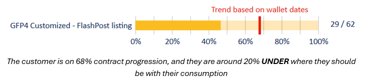
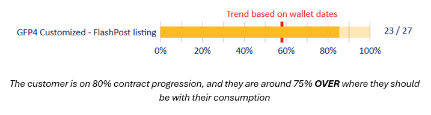
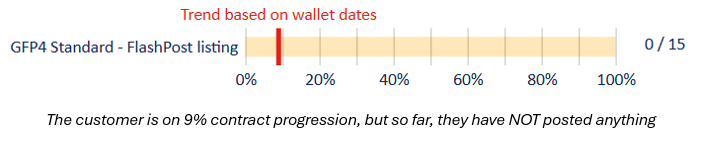

Consumption Follow Up
The TNW CS should keep an eye on the consumption of our customers, and to communicate with the account managers of the selling partners to prevent/solve potential issues or to flag early renewal/upsell opportunities. While validating monthly POs, you should check the current consumption and if the contract is at minimum of 20% of progresiion, you should:
- In case of underconsumption, let's say they are 10% under where they should be, send an email to the account maanger in charge, including their CS in copy so they are ware, to check the following:
- If the customer is having any issues with the systems
- If the customer is having internal issues (hiring freeze, etc.)
- If the customer would be interested in a product conversion (include this only if the contract progresission is 50% or more)
- In case of overconsumption, let's say 25% over wwhere they should be, send an email to the account manager in charge, including their CS in copy so they are aware, to propose the following:
- Upsell of credits
- Early renewal
- If the contract is not yet at a minimum of 20% progression, you do NOT have to follow it up, UNLESS no credits were used so far!
- IF that is the case, contact the account manager in charge to enquire why the customer is not using the setup.



Apart from the monhly PO customers, TNW should also check local contract consumption.
For that, run the 'consumption trend report' in FlashPost for YOUR customers (use the CS in charge filter) for 30 days or less:
- Run the ‘Any underconsuming (-100% to 0) at first -> filter on non-GFP products with the Excel report (column F) and follow the instructions for underconsuming above
- Run the ‘Any overconsuming (0 to 100%) at last -> filter on non-GFP products with the Excel report (column F) and follow the instructions for overconsuming above
- For the direct posting method, check when the stats were provided for the last time before contacting the account manager